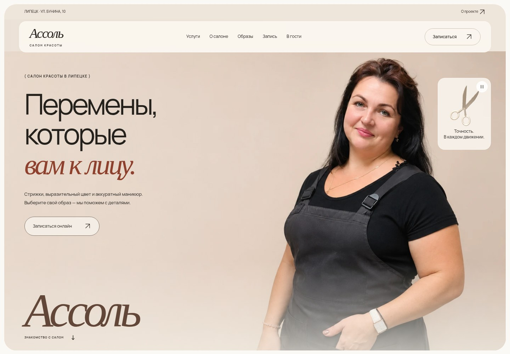
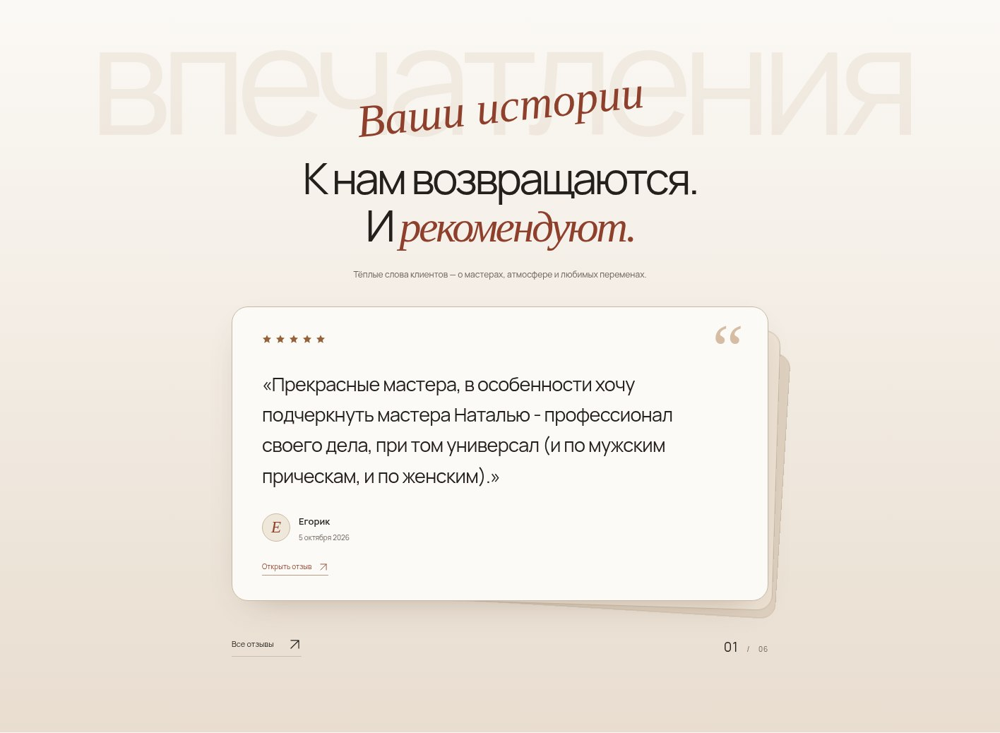
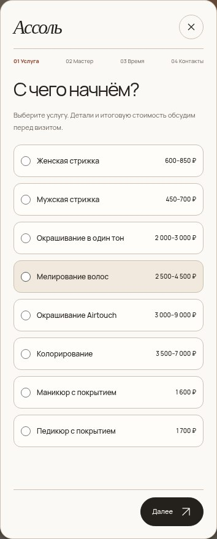
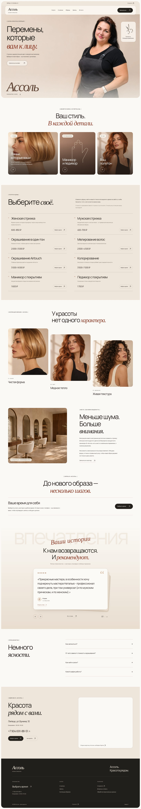
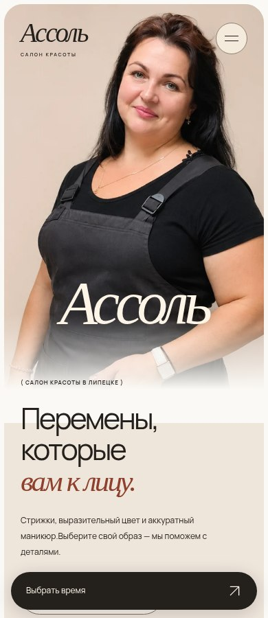

ДИЗАЙН · РАЗРАБОТКА · ЯНДЕКС КАРТЫ
Красота рядом.
Внимание
к каждому визиту.
Сайт салона красоты «Ассоль» в Липецке. Светлая визуальная система, предоставленный пользователем портрет и информация из карточки реального салона: услуги, цены, часы работы и отзывы.
Инициативная работа; коммерческий заказ и результаты продвижения не заявляются. Иллюстрации интерьера и коллекция образов созданы с AI. Фотография на первом экране предоставлена пользователем и обработана с сохранением внешности.

01 / ВИЗУАЛЬНЫЙ ЯЗЫК
Мягкий свет.
Чёткая структура.
Молочный и бежевый фон, тёмный текст, терракотовый акцент, крупная типографика и тонкие линии. Визуальная отправная точка — предоставленные скриншоты проекта Silke. Логотип и фотографии референса не копировались.
Главный портрет обработан по фотографии пользователя: удалена красная плашка, улучшены свет и чёткость, подготовлен спокойный фон и отдельный мобильный кадр. Лицо, внешность и причёска запрошены к сохранению.
02 / ПОДТВЕРЖДЁННАЯ ИНФОРМАЦИЯ
Из карточки салона.
С источниками.
Данные проверены 10 ноября 2026 по организации 1209085669: «Ассоль», Липецк, ул. Бунина, 10. Телефон +7 904 691-88-51. Режим работы: ежедневно, 09:00–19:00.
Восемь позиций прайса
Женская и мужская стрижки, окрашивание в один тон, мелирование, Airtouch, колорирование, маникюр и педикюр с покрытием. Для женской стрижки выбран диапазон подробной карточки услуги 600–850 ₽; в общих особенностях указан 600–900 ₽. Длительность не опубликована и не выдумывается.
Шесть положительных отзывов
Проверенные отзывы с оценкой 5/5, именем автора, датой и ссылкой на источник. Показаны точные фрагменты положительных отзывов со ссылками на полные тексты. Есть ссылка на все отзывы, включая остальные оценки.
03 / КАРУСЕЛЬ И МАРШРУТ
Доверие.
И понятный путь.
Отзывы с автопрокруткой
Слайд-шоу в виде стопки: активный отзыв выходит вперёд, следующая карточка увеличивается и занимает его место. Смена каждые 4,5 секунды, без отдельной кнопки паузы. В обычном режиме стрелки скрыты, доступны свайпы и клавиатура. При системном reduced-motion показ статичный, доступны кнопки. Автоматическое движение продолжается при наведении и касании. Оно останавливается при клавиатурном фокусе, скрытой вкладке и вне экрана. Reduced-motion выключает автозапуск.
Автопрокрутка управляет показом сохранённых цитат. Автоматическая синхронизация новых отзывов и цен с Яндексом не подключена.
Карта реального салона
Официальный iframe-виджет Яндекс Карт привязан к ID организации. Ссылка «Как пройти» строит пеший маршрут к координатам карточки: 52.582131, 39.519280. Основные кнопки открывают пошаговую форму: услуга, мастер, желаемая дата и время, имя и телефон. Время остаётся пожеланием до подтверждения администратором.
Виджет загружается с серверов Яндекса. Работоспособность внешней карты зависит от доступности сервиса в браузере посетителя.
ДЕТАЛИ ИНТЕРФЕЙСА
Продумано
до последнего шага.


04 / АДАПТИВНЫЙ САЙТ
Удобно
на вашем экране.


05 / ПРОВЕРКА
Проверено
в браузере.
Проверены 360, 390, 768 и 1440 px: контрастное название, компактная сетка цен, стопка отзывов с одним активным, стабильная высота формы на всех шагах, Анастасия в выборе мастера, валидация, сохранение выбора при возврате, защита от двойного открытия, обработка ошибки отправки и клавиатура. Дополнительно проверены экраны высотой 640 и 667 px: содержимое формы прокручивается отдельно от постоянно доступных кнопок. Полный сценарий отправки проверен с mock-приёмником, без передачи тестовых данных в Google.
Последний локальный Lighthouse mobile: производительность 96, доступность 100, Best Practices 100; LCP 2,6 с, CLS 0, TBT 20 мс. Это лабораторный замер через Playwright route fulfillment, не полевые Core Web Vitals и не измерение хостинга. Noindex сохранён намеренно. В Google Таблице созданы колонки и статусы; предоставленный URL Apps Script перенаправляет на вход в Google, поэтому живая отправка пока выключена. Нужен анонимный доступ «Все» к веб-приложению владельца.